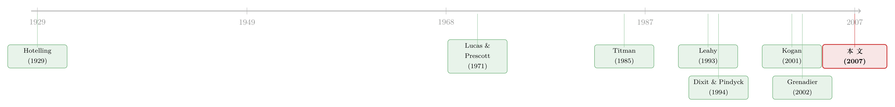

竞争越激烈，反而越要「等」？——把实物期权和竞争装进同一个均衡
本文读的是 Novy-Marx (2007, Review of Financial Studies)：在一个有无穷多个竞争性企业的行业里，只要投资带有机会成本、企业之间又彼此异质，实物期权溢价就不会被竞争抹平——相反，竞争性企业会比标准的局部均衡模型预测得更晚才肯投资，主动放弃一些净现值为正的项目。背后的钥匙，是一条被产能「部分反射」回去、因而负偏的产品价格过程。
1 一块空地的悖论
先讲一个 Titman（1985）讲过的老故事：城市中心有一块空地，谁都看得出来，在上面盖一栋楼是稳赚不赔的——净现值（net present value, NPV）明明是正的。可地主偏偏不盖，任它空着。
为什么？因为这块地的价值，不在「现在盖能赚多少」，而在「等一等，将来也许能盖一栋更赚钱的楼」。这就是 实物期权 (real option) 的直觉：投资是不可逆的，一旦动工，等待的价值就被永久消灭，所以企业宁愿延迟，哪怕眼下的项目已经赚钱。这套逻辑如今在学界和业界都已是常识，它漂亮地解释了现实里那些「偏离」新古典 Tobin's Q 投资理论的现象——市值常常远高于账面价值，投资门槛常常远高于零 NPV。
可是，故事到这里就出现了一道裂缝。
实物期权说：延迟投资能带来超额利润。但我们对竞争的全部认识都告诉我们：竞争会把超额利润磨平。这个事实，早在 1838 年 Cournot 给它建模之前就已经被人们知晓。于是一个自然的问题是：在一个像房地产这样高度竞争、玩家成千上万的行业里，期权溢价凭什么还能存在？为什么那么多地主会同时选择「等」？
近年的文献，给的答案是「不能存在」。Grenadier（2002）用 Cournot 的直觉论证：竞争会侵蚀实物期权价值，把企业重新推回零 NPV 的投资法则；Leahy（1993）、Kogan（2001）也得到类似结论。可是空地还在那儿空着。理论与现实，对不上。
这篇论文要做的，正是把经济学里两条几乎从不对话的支流——实物期权理论与竞争理论——拧进同一个均衡框架里。而它给出的答案，出人意料地走向了反面。
2 裂缝出在哪：线性技术 vs. 机会成本
要理解 Novy-Marx 的反转，得先看清 Grenadier 们的结论是怎么来的。
他们的结论——竞争抹平期权溢价、把企业推回零 NPV——并不是普遍真理，而是他们所建模的那类行业的特例。在那类模型里，生产技术是「线性、可增量」的：企业可以以任意小的增量添加产能，而且不付任何调整成本。在这种技术下，实物期权溢价不过是垄断（或寡头）租金的另一个名字。既然如此，足够充分的竞争会摧毁它，就一点也不奇怪了。
但寡头租金，并不是超额利润的唯一来源。
这是全文的枢纽：租金可以直接来自生产技术本身，而不是来自市场势力。当投资带有机会成本、而企业又在规模与范围上彼此不同，期权价值就不再是「竞争的对立面」，它会从技术里长出来——哪怕寡头租金被竞争碾成了零。
机会成本是什么？在论文的设定里，开发新产能会损害企业现有的业务。电脑厂商推出新机型，就等于亲手杀死了旧机型的需求；曼哈顿的小公寓业主要盖写字楼，必须先把现有的公寓楼推倒，放弃未来的租金。论文把这个机会成本极端化为：开发 = 完全放弃现有项目（fractional loss 设为 1）。
关键在于，这个机会成本与新项目的规模几乎无关：无论你是盖 30 层还是 60 层，都得先把现有的楼推倒。而直接建造成本却是随规模递增的。这一「固定的机会成本 + 递增的建造成本」组合，把投资变成了离散、块状、间歇性的——不可能像线性技术那样连续微调。
于是空地的悖论解开了：当 30 层写字楼的空地主考虑动工时，他并不是在和隔壁那栋 15 层公寓的业主竞争。后者的机会成本（推倒现有楼、损失现有租金）高到足以把她排除在这次投资机会之外。但她手里仍握着一个有价值的期权——如果城市继续生长，将来某天需要一栋 60 层的塔楼，而那时所有空地都已开发完毕，她的机会成本也许就低到足以入场了。
异质，让大家无法在同一个投资机会上正面厮杀。竞争，被「异质性」这道楔子劈开了。
3 真正的反转：异质性是内生的
到这里，故事其实还不算意外——「供给侧异质会削弱竞争」，这并不稀奇。真正令人意外的，是异质性本身从哪里来。
自 Hotelling（1929）那篇经典以来，人们就知道需求侧的异质能削弱竞争——整个 水平产品差异化 (horizontal product differentiation) 的概念，都建立在「口味不同让企业得以分割市场、少竞争、多攫取消费者剩余」之上。Novy-Marx 把这件事推到了供给侧，而且更进一步：
供给侧异质削弱了竞争，但这个异质性本身又是内生地涌现出来的——恰恰因为「异质的企业彼此竞争更少」。企业会主动做出让自己区别于他人的投资决策，以此减少未来要面对的竞争。那个自然而稳定的横截面分布，正是最小化企业间跨期竞争的那一个。
那么，这个稳定分布长什么样？答案是：企业的对数产能（log-capacity）呈均匀分布。在这个分布下，每家企业在投资时面对的、来自相似机会成本企业的竞争压力都一样大，于是没有任何一家有动机去再差异化自己——它是一个不动点。
横截面分散的程度，取决于经济的基本面。论文给出四条清晰的比较静态：分散度更大，当且仅当（1）未来需求的不确定性高，（2）需求的平均增长率高，（3）建造的规模成本低（即技术越接近线性），（4）贴现率低。
接着，一个自然的问题是：把这套「异质 + 不可逆 + 机会成本」放进一般均衡，价格会怎么走？而这，才是论文最漂亮的一步。
4 模型：一条被「部分反射」回去的价格
4.1 设定
考虑一个由连续统（continuum）个竞争性企业组成的行业。一家企业的全部，就是它拥有的产能 \(q\)，它能无成本地按产能比例生产一种不可储存的商品，在竞争市场上以出清价 \(P_t\) 卖出。市场出清价满足一个不变弹性的反需求函数：
$$P_t = X_t\, Q_t^{-1/\alpha}$$
其中 \(Q_t\) 是瞬时总供给（也等于总产能），\(\alpha\) 是需求的价格弹性，\(X_t\) 是 乘性需求冲击 (multiplicative demand shock)。等价地，需求是 \(D_t = X_t^{\alpha} P_t^{-\alpha}\)。需求冲击服从 几何布朗运动 (geometric Brownian motion, GBM)：
$$dX_t = \mu X_t\, dt + \sigma X_t\, dz_t$$
\(\mu\)、\(\sigma\) 为常数。任何时刻企业都可以「开发」来增加产能，开发可以反复进行，但要付两种代价：一是直接的投资成本，建模为 Cobb-Douglas 式的规模递增成本——把产能开发到 \(q^{*}\) 要花 \(q^{*\gamma}\)，其中 \(\gamma>1\)；二是前面说的机会成本，即彻底放弃现有项目。现金流在风险中性框架下、以无风险利率 \(r\) 贴现。
初始时，企业的对数产能在最小与最大企业之间均匀分布（这其实是「调整产能的机会成本异质」的另一种说法），此后每家企业的规模由它自己的均衡投资决策内生演化。
4.2 策略假设：一个倍数式的投资法则
论文用「先猜、再验」的办法求均衡。它先假设了一个策略：
一家现有产能为 \(q\) 的企业，当价格首次升到 \(P_q^{*}\equiv q^{\gamma-1}P_1^{*}\) 时，最优地把产能一次性扩张到 \(q^{*}\equiv\kappa q\)。
这里 \(\kappa>1\) 是一个度量「经济中异质程度」的参数，由一个关于 \(\kappa\) 的非线性方程内生决定；触发价格中的常数 \(P_1^{*}\) 则可写成
$$P_1^{*} = \frac{\beta}{\beta-1}\cdot\frac{r-\mu}{r}\cdot\frac{\kappa-1}{\kappa}, \qquad \beta=\sqrt{\Big(\tfrac{\mu}{\sigma^2}-\tfrac12\Big)^2+\tfrac{2r}{\sigma^2}}-\Big(\tfrac{\mu}{\sigma^2}-\tfrac12\Big)$$
其中 \(\beta\) 正是实物期权里那个熟悉的「基本面二次方程」的正根。这个倍数式（multiplicative）的投资法则有一个极漂亮的性质：它保持了对数产能的均匀分布不变——这正是 §3 里那个稳定不动点。而且，最小企业的产能成了总产能的充分统计量。
4.3 关键结果：部分反射的价格
在策略假设下，总产能的演化（命题 1）为
$$Q_t = \left(\frac{\bar P_t}{P_0}\right)^{\frac{1}{\gamma-1}} Q_0$$
\(\bar P_t\) 是「到 \(t\) 为止的历史价格最高点」。把它代回反需求规则，就得到了全文的核心——价格的显式演化（命题 2）：
$$\ln P_t = \ln P_0 + \ln\!\frac{X_t}{X_0} - \frac{1}{1+\alpha(\gamma-1)}\ln\!\frac{\bar X_t}{X_0}$$
右边三项各有含义：第一项校准初始价格；第二项是需求对价格的直接效应；第三项是供给效应——总产能盯着历史价格高点（从而盯着历史需求高点）走。
请盯着这个式子想象一条价格路径。在价格低于历史高点时，只有 \(\ln X_t\) 在变，于是价格的瞬时演化和需求冲击完全一样——一条普通的 GBM。可一旦触到历史高点，正向的需求冲击会激发一次供给反应，这次反应把价格的上行衰减掉一个因子
$$\frac{\alpha(\gamma-1)}{1+\alpha(\gamma-1)}<1$$
这就是论文所谓的「部分反射的几何布朗运动」(partially reflected geometric Brownian motion)：价格在高点处被产能「顶」了一下，但又不是完全反射（线性增量模型对应完全反射、反射壁在 1）。反射的「程度」取决于建造的规模成本和价格对供给的弹性。
直觉上这意味着什么？产能对需求的反应是不对称的：需求上行时企业能迅速加产能，把正向冲击吃掉一截，只让它部分传导到价格；而需求下行时，由于不可逆，产能撤不回来，负向冲击就更充分地砸进价格。结果，价格是负偏（negatively skewed）的。
而 Dixit（1999）早就证明：负偏会让企业延迟投资。当产品价格出现大幅下跌的概率更高时，企业更有动机等一等。于是反转出现了——
这个「额外的延迟动机」，叠加上本来就显著为正的期权溢价，使得竞争性企业的投资延迟，比标准的、用观测到的价格数据校准的局部均衡实物期权模型预测得还要久。竞争，看上去把企业推向了更晚、而非更早的投资。
注意论文的措辞很克制：它并不是说竞争者比面对同样需求的策略性垄断者延迟得更久；而是说，竞争者延迟得比「局部均衡模型按观测价格校准时」所预测的更久。两套对照不能混为一谈。
还有一个发人深省的副产品：因为产品价格的大跌恰恰源于企业加产能，所以大跌最可能发生在企业选择开发之时——企业总是预期着价格下跌去加产能。那些在价格大跌前夕新增的产能，事后看像是「过度建设」，但事前却是最优的。
4.4 企业价值：一个带标注的方程
最后，论文为企业价值求出了闭式解。先把企业价值（式 6）写成
$$V(q,P_t,\bar P_t)=\max_{\{(\tau_i,q_i)\}}\; E_t\!\left[\int_t^{\infty} e^{-r(s-t)}q_s P_s\, ds-\sum_{i=1}^{\infty} e^{-r(\tau_i-t)}q_i^{\gamma}\right]$$
即「未来现金流的现值，减去每一次开发的成本现值」。沿用标准方法，把价值在「下一次开发时点」处一拆为二，并利用「企业只会在价格创新高时才开发」（因为价格过程在高点之下是马尔可夫的），可以只盯着价格达到历史最高 \(P_t\) 的那些时刻，定义「价值峰值函数」(value-at-max) \(W(q,P_t)\equiv V(q,P_t,P_t)\)。命题 3 给出：
第一项是把现有产能的现金流当作「永远持有、不再开发」时的价值；第二项 \((P_t/P_q^{*})^{\eta}\) 是把时间贴现到下一次开发那一刻的乘子，指数 \(\eta=1+\beta/[\alpha(\gamma-1)]\)；第三项则是那一刻「再开发」相对于「不开发」多出来的价值。换句话说，企业价值 = 在手资产 + 增长期权，而期权的部分对产品价格是凸的。
正是这个凸性，把价格的偏度翻译进了股票收益的偏度：远离历史高点时，总产能几乎不动，产品价格几乎无偏，但期权部分的凸性让股票收益正偏；当价格高企、产能增长效应主导时，股票收益转为负偏。于是论文给出一个迄今未被检验的实证预测——股票收益的偏度应随商业周期变化：扩张期负偏，衰退期正偏。（关于横截面偏度本身的可预测性，可参见《市场的下一步，藏在一万只股票的「歪斜」里》。）
5 竞争者 vs. 垄断者：一笔福利账
把这套机器对准产业组织，论文还顺手比较了「无数小竞争者」与「一个策略性垄断者」。
不意外的是，能攫取垄断租金的垄断者更赚钱。更有意思的是：垄断者会内部化新产能对现有项目造成的伤害，于是他再开发得更少、但每次更猛——表现为垄断经济里更大的异质性（最发达项目与最不发达项目的产能之比，垄断经济超过竞争经济）。
福利上，垄断者限制供给造成的消费者剩余损失，被一种「供给效率」部分抵消：垄断者提供的有限供给，是更有效率地供给的；而竞争性企业被竞争压力逼着过于频繁地以过低的资本密度去再开发，反而低效。这种低效在产业产出的价格弹性高时尤其突出。
6 文献脉络
把这条线索捋一遍，能更清楚地看出本文站在哪里。
源头是 Lucas & Prescott（1971）的「不确定下的投资」一般均衡传统；与之并行的，是 Hotelling（1929）关于「异质削弱竞争」的洞见。到了 1980 年代，Titman（1985）用城市空地把「土地价值即开发期权」讲得家喻户晓，Pindyck（1988）则把不可逆投资与产能选择正式化，并最终汇成 Dixit & Pindyck（1994）那本实物期权的「圣经」。

随后，文献分出两支。一支是 Leahy（1993）——他证明竞争性企业的自由进入门槛会「神似」垄断者的期权门槛，并指出近视行为的最优性；以及 Grenadier（1996, 2002）、Kogan（2001），他们用 Cournot 式的期权博弈论证「竞争抹平期权溢价、把企业推回零 NPV」。另一支是 Dixit（1999），他点明负偏度会让企业延迟投资——这正是本文借来的那把钥匙。
Novy-Marx（2007）的位置，是把这两支重新焊在一起：它接受 Grenadier 们的均衡方法，却指出他们的结论捆绑在「线性增量技术」这个特例上；一旦换成「带机会成本 + 异质」的块状技术，竞争不但不抹平期权溢价，反而经由内生的负偏价格过程放大了延迟。它和 Berk, Green & Naik（2004）、Kogan（2004）一道，属于「从投资侧推导资产价格与收益动态」的那条线（这条线的实证检验，可参见《一个「成功」的模型，为什么经不起逐年对账？——重估投资基础资产定价》）。
7 评论与延伸（Q&A + 研究方向）
(a) 几个可能的疑问
Q：这和标准的 Dixit–Pindyck 实物期权模型，差别到底在哪？
差别有两层。一是一般均衡：标准模型里产品价格是外生给定的 GBM，本文里价格由所有企业的投资决策内生出清，于是出现了「部分反射」。二是重复开发 + 机会成本：标准模型多半是「一次性」开发，本文允许企业反复开发、且每次都要放弃现有项目。正是这两点叠加，才让竞争的效果从「抹平」翻转为「放大延迟」。
Q：「竞争让企业更晚投资」，这不是和 Cournot 直觉正面冲突吗？谁对？
两者其实没真正打架。Cournot 直觉对照的是「策略性垄断者」；本文对照的是「按观测价格校准的局部均衡模型」。论文明确声明：它没有说竞争者比面对同样需求的垄断者延迟更久。它说的是，如果你天真地拿一个局部均衡实物期权模型、用现实价格去校准，你会低估竞争者实际的延迟——因为你漏掉了内生的负偏。
Q：凭什么是「对数产能均匀分布」稳定，而不是别的分布？
因为在对数均匀分布下，每家企业投资时面对的「相似机会成本企业」的竞争压力都相同，于是没有谁有动机再去差异化自己。它是「策略→价格过程→最优响应」这个复合映射的不动点。而那个倍数式投资法则（\(q\to\kappa q\)）恰好保持这个分布不变，自洽闭环。
Q：负偏度怎么就让企业更晚投资了？
直觉是：投资不可逆，企业最怕的是「投下去之后价格大跌」。负偏意味着大跌的尾部更厚，于是「等待」这个期权更值钱，企业把投资门槛抬得更高。这一步本身是 Dixit（1999）的结果，本文的贡献是内生地造出了这个负偏——它不是假设进去的，而是产能不对称反应的均衡产物。
Q：把机会成本设成「完全放弃现有项目」（fractional loss = 1），是不是太极端？
是个简化，论文也承认。但它强调，分析对任何其它的分数损失都适用，设为 1 只是让代数干净。真正起作用的不是「损失 100%」，而是「机会成本基本与新项目规模无关」这一定性特征——是它把投资变成块状、间歇的。
Q：那个「股票收益偏度随周期变化」的预测，被检验过吗？
论文自己说这是一个「迄今未被检验」(hitherto untested) 的预测：扩张期负偏、衰退期正偏。它给的是机制（期权部分对价格凸 + 价格在高点处负偏），把实证留给了后人。这恰恰是一个现成的、可做的实证题。
(b) 几个可能的研究问题与提案
1. 把「部分反射价格」搬进信用利差的偏度
【经济故事】如果一个行业的产品价格因为产能的不对称反应而内生负偏，那么以企业现金流为标的的债权——公司债——其违约风险也应当继承这种负偏，且随商业周期摆动：行业扩张末期（价格在高点、负偏最重）发行的债，事后违约的左尾应更肥。这把一个资产定价的偏度预测，翻译成了信用市场的可检验含义。
【可行性】中。需要按行业聚合的产能/产出数据（如 NBER-CES、Compustat 行业层面资本存量）+ TRACE 的公司债利差。识别上可用「行业是否处于产能历史高点」作为状态变量，看新发债的违约/利差偏度是否随之变化。难点在于把「历史价格高点」这个理论对象映射到可观测的行业指标。
2. 不可逆 + 固定成本下的「块状发债」
【经济故事】本文的投资块状性来自「固定机会成本 + 递增建造成本」。债务发行同样有固定发行成本、也有某种不可逆性（赎回有成本）。能否把同一套「倍数式触发」逻辑搬到资本结构，预测企业的发债是离散、间歇、在「杠杆历史低点」触发的，并由此内生出杠杆的横截面分布？这与本博客已讨论的固定发行成本下的债务动态相呼应。
【可行性】高。理论上是把 §4 的触发机制换标的；实证上 Mergent FISD + Compustat 足以刻画发债的块状时序。识别清晰，是个 doable 的结构化题目。
3. 外资持有人会改变行业的投资节奏吗？
【经济故事】本文里横截面异质是内生的、由「最小化跨期竞争」决定。如果引入一类贴现率不同的投资者（比如长期外资），他们持有的企业等价于面对更低的 \(r\)——而论文的比较静态说，低贴现率对应更大的横截面分散、也对应更长的投资延迟。那么外资持股高的行业，是否表现出更分散的产能分布、更「克制」的投资？
【可行性】中偏低。需要把「投资者异质」内生进均衡（本文是同质风险中性），理论改造不小；实证上可用跨国可投资度（investability）冲击作为外资进入的准自然实验。诚实地说，从本文到这个问题之间，缺一块「异质投资者一般均衡」的理论桥，短期内更像是理论题而非纯实证题。
8 我的判断
这篇论文的贡献，干净而有分量：它指出 Grenadier 一系「竞争抹平期权溢价」的结论，并非普遍真理，而是线性增量技术的特例；只要把现实里随处可见的机会成本与异质性放回来，竞争反而经由一条内生负偏的价格过程放大了投资延迟。从一个「先猜后验」的策略假设出发，求出闭式的价格过程和企业价值，再顺势导出「收益偏度随周期变化」这一可证伪的预测——这是理论该有的样子：解释了空地悖论，又留下了实证的抓手。
但有几处值得警惕。其一，「开发 = 完全放弃现有项目」与「初始对数产能均匀分布」都是为了代数干净而设的强假设，论文虽声称结论可推广，但均衡的唯一性只在「对数价格演化是 \(P_t\) 与 \(\bar P_t\) 的零次齐次函数」这一限定类里成立——这把均衡选择的负担藏进了一个不易检验的假设里。其二，整篇是风险中性定价，因此那个漂亮的「股票收益偏度」预测，混合了真实世界的物理偏度与定价核的作用，要拿去对数据时得格外小心——你测到的偏度，未必就是模型里那个偏度。其三，全文几乎没有结构化校准的数字（核心的量级是参数性的，如衰减因子 \(\alpha(\gamma-1)/[1+\alpha(\gamma-1)]\) 和四条比较静态），离「能直接对着观测值算」还有一段路。
我最想看到的后续，是有人真的把那个「扩张期负偏、衰退期正偏」的收益预测拿去检验——它不需要本文的全部结构，只需要行业层面的周期状态变量和个股收益偏度，是个现成的、可做的题。退一步，把这套「不可逆 + 块状」的机器移植到公司债发行与违约的偏度上，也许能在信用市场里，照见同一条被产能「顶」回去的暗线。
参考文献
Berk, J., R. Green, and V. Naik (2004). Valuation and Return Dynamics of New Ventures. Review of Financial Studies 17, 1–35.
Caballero, R. J., and R. S. Pindyck (1996). Uncertainty, Investment, and Industry Evolution. International Economic Review 37, 641–62.
Dixit, A. K. (1999). Irreversible Investment and Competition Under Uncertainty, in Capital, Investment, and Development. Cambridge, MA: Basil Blackwell.
Dixit, A. K., and R. S. Pindyck (1994). Investment Under Uncertainty. Princeton, NJ: Princeton University Press.
Grenadier, S. R. (1996). The Strategic Exercise of Options: Development Cascades and Overbuilding in Real Estate Markets. Journal of Finance 51, 1653–79.
Grenadier, S. R. (2002). Option Exercise Games: An Application to the Equilibrium Investment Strategy of Firms. Review of Financial Studies 15, 691–721.
Hotelling, H. H. (1929). Stability in Competition. Economic Journal 39, 41–57.
Kogan, L. (2001). An Equilibrium Model of Irreversible Investment. Journal of Financial Economics 62, 201–45.
Leahy, J. V. (1993). Investment in Competitive Equilibrium: The Optimality of Myopic Behavior. Quarterly Journal of Economics 108, 1105–33.
Lucas, R. E., and E. C. Prescott (1971). Investment Under Uncertainty. Econometrica 39, 659–81.
Novy-Marx, R. (2007). An Equilibrium Model of Investment Under Uncertainty. Review of Financial Studies 20(5), 1461–1502.
Pindyck, R. S. (1988). Irreversible Investment, Capacity Choice, and the Value of the Firm. American Economic Review 79, 969–85.
Titman, S. (1985). Urban Land Prices Under Uncertainty. American Economic Review 75, 505–14.